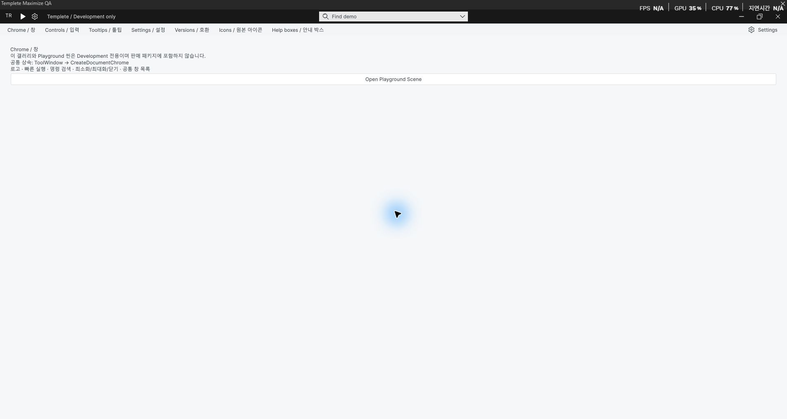
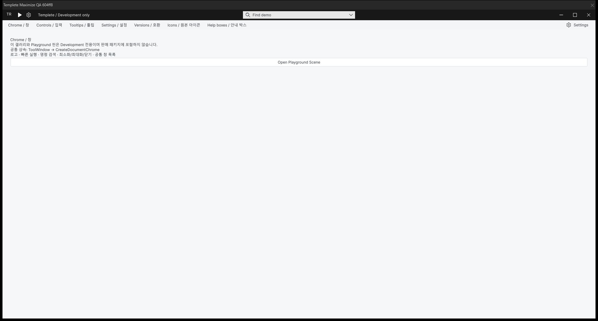

Tracefolio REPORTS & ISSUES
Tracefolio REPORTS & ISSUES최대화·원래 크기 복원의 캡처 애니메이션 제거
검증 대기최대화·원래 크기 복원에서 캡처 애니메이션을 제거하고 실제 Unity 창의 양방향 크기 전환과 전후 화면을 확인했습니다.
작업 결과
구현·컴파일·실제 Unity 호스트 전환·화면 캡처 완료
변경 내용
적용 내용
최대화·원래 크기 복원에서 캡처·창 숨김·이미지 표면 생성·약 0.30초 뒤 표시하던 WorkbookWindowMotion.ToggleMaximize를 삭제했습니다. 공통 호스트, DataTable 최대화 버튼·제목줄 더블클릭·목록 명령은 WorkbookNativeWindow.Execute에서 잔여 복원 표면을 정리한 뒤 기존 ExecuteImmediate로 실제 창을 직접 전환합니다. 최소화 목록 복원 애니메이션은 보존했습니다. standalone 템플릿의 기존 직접 전환은 유지합니다.
검증
Unity 6000.0.83f1의 실제 TemplateGallery 창에서 공통 WindowFrame.Execute → 제품 호스트 경로를 실행했습니다. 수정 전 16,909개 프레임 중 모션 활성 38개, 수정 후 5,025개 프레임 중 모션 활성 0개를 기록했습니다. 수정 후 일반 1000×680과 최대화 1904×993 양쪽 상태가 확인됐습니다. 로드된 수정본 어셈블리 MVID는 6b7c9266-cbd7-44ba-bcfa-2fe624f928de입니다. 3개 어셈블리 컴파일과 3개 라우팅 사례 통과. 실제 화면을 네이티브 PrintWindow로 캡처해 검토했습니다. 기록은 Editor update 표본이며 화면 주사율 단위의 무지연을 보장하지 않습니다.

수정 전: 캡처 표면 전환이 활성화되는 프레임이 기록됐습니다.

수정 후: 실제 창을 직접 최대화한 화면입니다. 원래 크기 복원도 확인했습니다.
남은 사항
네이티브 마우스 버튼·제목줄 더블클릭의 전 과정 입력 검증은 완료하지 못했습니다. UI 자동화 helper가 active request 상태여서 추가 입력을 수행할 수 없었습니다. 실제 호스트 경로의 양방향 창 전환과 전후 캡처는 확인했습니다. 버튼 콜백 자동 호출의 무효 기록은 보존하고 성공 근거로 사용하지 않았습니다. OS 자체 애니메이션은 변경하지 않았습니다. 전체 기존 가이드의 오래된 스크린샷은 이번 검증 범위에 포함하지 않았습니다. 교훈 검토: 검증된 새로운 전역 규칙은 없어 변경하지 않았습니다.
작업 시간
- 제안 시간: 10~20분
- 실제로 완료된 시간: 2026-11-02 16:44:01 KST 시작, 17:18 KST 기준 약 34분 경과; 화면 검증·보고서 공개 후 최종 종료 시각 별도 기록
- XERJ: 실패 — XERJ Status 노드 미실행. rg로 공통 호스트·직접 호출과 최대화 경로 전체 대조